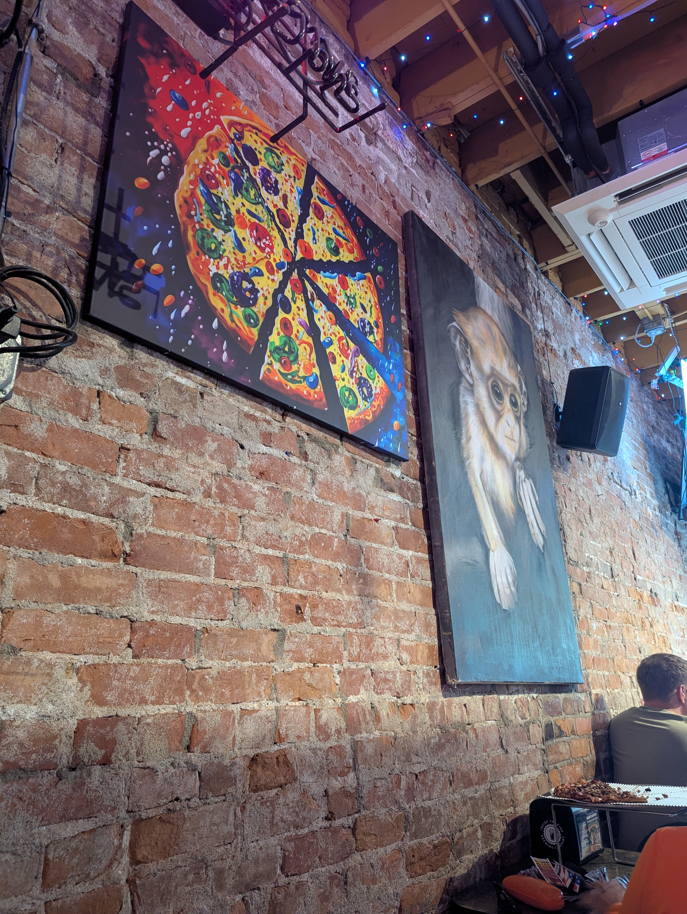
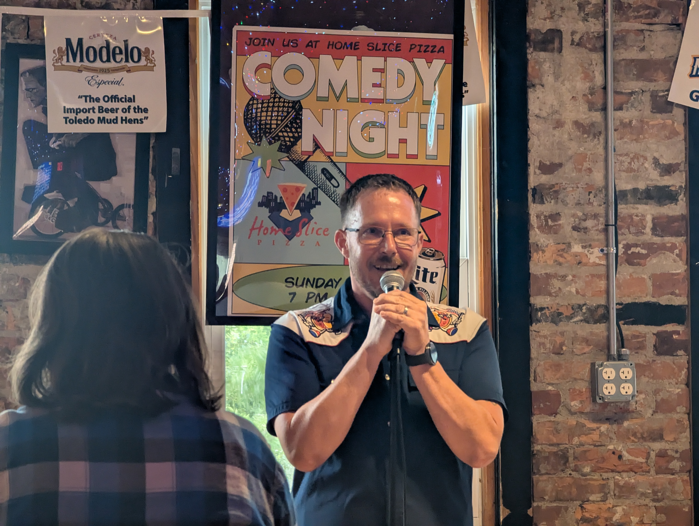
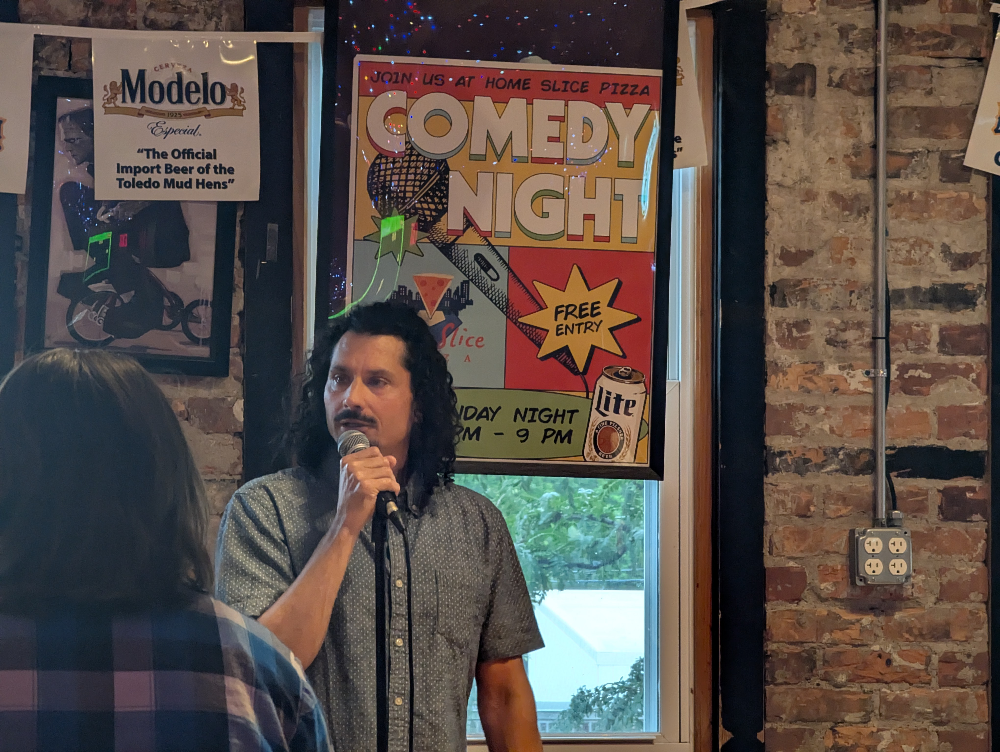

Crumbley Comedy: Toledo's Mobile Comedy Club
“All these jokes have been pre-approved as funny by me.” - Mitch Hedberg
I'm an enormous fan of stand-up comedy, and boy are my arms tired! Nailed it.
I even performed at an open mic once myself, many years ago, back when Connxtions Comedy Club was still in business. From classics such as Richard Pryor and Joan Rivers to current greats like Bill Burr and Dave Chappelle, I love it all. Dark humor, squeaky clean, doesn’t matter. If you’re funny, I’m in.
So when I recently stumbled across Crumbley Comedy Toledo on Facebook, it immediately piqued my interest. Founded and operated by comedian Dave Crumbley, Crumbley Comedy is described as "a traveling circuit of high-quality, low-price comedy shows." Their shows take place at venues around Toledo, such as Smokey’s BBQ, Toledo Spirits, Home Slice Pizza, The Barn, Chevy’s Place, and Third Street Cigar. It’s always a good thing when you can boost locally owned businesses and make people laugh at the same time, so I love the concept.

My wife and I decided to catch a show this past Sunday that was held at Home Slice Pizza downtown. Once you climb the stairs to the second floor, you’re met with a long and narrow space with a bar on the right-hand side, and exposed brick walls adorned with some funky artwork. The venue serves as a totally decent spot for stand-up because the laughter is well-contained and doesn’t escape through high ceilings or wide open space. The mic stand was nestled between the lottery machine and a high-top table at the far end of the room, making for an up-close comedy experience. As it led up to showtime, I clocked several comedians confirming their names on the sign-up sheet. I'm glad we arrived a little early, both to grab good seats and to sample a couple of their personal-sized pizzas (veggie delight for me, margherita for her). When showtime arrived, some intro music was pumped through the sound system, the lights came down and the TVs were turned off so as to not distract from the comics, which I personally appreciated.
Though Mr. Crumbley hosts the bulk of the shows himself, this particular event was hosted by local comic Justin Myers. He served as emcee for the two-hour free open mic, and did a great job keeping the crowd engaged throughout. Each comic was allotted five minutes of stage time, and I'd say there were at least fifteen or so comedians who had signed up, so you get a really good mix of styles and tastes. Casey Heller was my personal favorite, with what I thought was the strongest set of the evening. There were a handful of comics that had traveled from Ann Arbor and even Canada to participate, a clear demonstration of their dedication to the art form and the reputation for this particular open mic. “We are a development tool where people can learn a really cool skill in a positive learning environment alongside professional comedians and the best of the regional scene,” Crumbley said.

"My girlfriend makes me want to be a better person... so I can get a better girlfriend." - Anthony Jeselnik
Heavily influenced by the works of Jerry Seinfeld, Crumbley has been in the comedy industry for some time now. “I have been running comedy shows for eight years, but they were largely bad for a long time. Crumbley Comedy has been serious for three years. In 2023, I had the opportunity to live in Lisbon, Portugal for six months, where I performed alongside great comedians from all over the world. I learned a lot from this experience and brought that spirit of comedy back to Toledo with me, and it's been really successful since. I handle all the logistics — meeting with venues, booking the shows, buying advertising. And I am there on site physically hosting the vast majority of our 4–5 weekly events. I am very tired!”
“I thought you had to live in New York or Los Angeles,” Dave said. “But ten years ago, a comedy club was opened down the street from my house, and I discovered the concept of open mic comedy. And I have worked my way through various hookah lounges and pizza parlors and comic bookshops across the United States (and Portugal) over the last ten years.”

On July 31, they’ll be presenting the latest installment of their signature event — The Crumbley Cup — where 32 comedians compete head-to-head in a series of sixty-second sets. This event sold out last year at the Toledo Funny Bone, so buy your tickets sooner rather than later before they're gone. Based on what I saw at the open mic, I plan to be there. Going to the show has actually reignited my desire to return to the stage myself. Anxiety's a bitch, so we shall see.
Their full schedule, tickets, comedian sign-ups, and all other information can be found at crumbleycomedy.com.